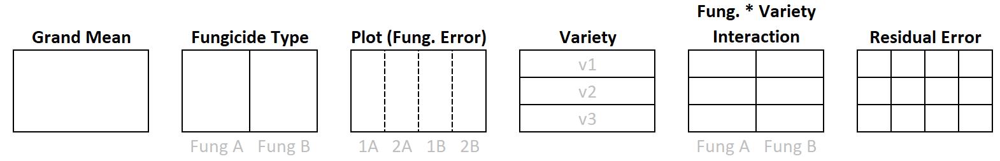
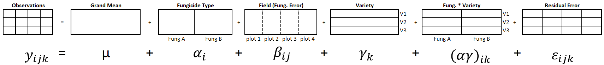

The designation SP/RM[1, 1] stands for a Split Plot, or Repeated Measures design with 1 factor (the between-block factor) applied to the larger experimental units (blocks), and 1 factor (the within-block factor) applied to smaller experimental units. The block factor is another important part of the model, but it is considered a nuisance factor and so does not show up specifically in the SP/RM[1, 1] designation.
Motivating Example
Consider an example from agriculture. Farmer John would like to compare yield for a specific variety of maize treated with 2 different fungicides: generic vs premium. Farmer John has 4 plots of land available for planting. He can assign a fungicide to each plot completely at random, see Figure 1.
Figure 1: Layout of Farmer John’s 4 Plots
Farmer John may be interested in the variation of yield within each plot. Even if he takes multiple yield measurements within each plot and measures yield at each sample point, he still only has 2 replicates of each fungicide.
So far there is nothing new here and this can be analyzed as a BF[1]. Each plot is an experimental unit and is assigned one of the fungicides completely at random.
Adding a Nested Factor
Farmer John suspects that the impact of fungicide type is different for different varieties of maize. He wants to add 3 maize varieties to the experiment, but because of mechanical constraints he cannot completely randomize combinations of fungicide with maize variety. While maize variety can be applied to smaller areas within a plot, he can only apply the fungicide to an entire plot.
Nothing has changed for the fungicide treatment level. But it can be seen in Figure 2 we have a new level of experimental unit: sub-plots! Variety is assigned to sub-plots randomly within each plot. Variety is unreplicated inside of a single plot, but looking across plots we see variety replicated 4 times.
Figure 2: Layout of Fungicide Assigned to Plots with Maize Variety Assigned to Subplots
Because each plot belongs to only 1 level of fungicide, we say plot is nested within fungicide.
Nesting occurs when each level of a factor appears with only 1 level of another factor. The block factor will always be nested inside of the between-block factor.
Factor crossing occurs when all levels of one factor appear with each and every level of another factor. Variety is crossed with block because each variety appears in each block. Variety is also crossed with fungicide.
In more general terms, the within-block factor is crossed with the block factor and is also crossed with the between-block factor.
Factor Structure
Figure 3 shows the factor structure for Farmer John’s experiment. The partition lines for the plot factor are dashed to emphasize that the plots are nested in fungicide. You may also notice that the plot arrangement in Figure 3 is not quite like the arrangement in Figure 2. Remember, the factor structure diagram represents how the data is arranged and partitioned and does not necessarily represent how the plots are positioned in the physical, real world.

Figure 3: Factor Structure for Farmer John’s Experiment
Figure 4 shows a generic factor structure for a split plot / repeated measures design, without the context of the Farmer John example.
Figure 4: Factor Structure for Generic SP/RM[1,1] Design
There are two levels of experimental units. Plot is the experimental unit for Fungicide, and sub-plot is the experimental unit for maize variety.
You can tell what the experimental unit is for a factor based on how/when the randomization takes place. The fungicide was randomized to plots, and maize variety was randomly assigned to sub-plots within a whole-plot.
Replication Inside of Blocks
The factor structure diagrams above show examples of designs without replication inside of blocks. However, it is not uncommon to have replication within blocks. For example, Farmer John could have split each plot into 6 sub-plots, which would allow variety to be replicated twice in each plot. This poses no problem in the analysis, and in fact gives us more precision in our estimates.
Replication of the within-block factor inside of a block also allows the estimation of the block by within-block interaction (e.g. plot by variety interaction). Usually blocks are random factors, so this likely results in an interaction between a fixed and random factor. Analyzing this type of interaction requires some additional assumptions/decisions that are not discussed in this book. For that reason, we will continue to make the assumption the block by within-block interaction effect is zero and will keep our designs simple with no replication inside of blocks.
Hypothesis and Model
There is not a consensus on notation for a split-plot / repeated measures design with nested factors. Different textbooks will represent the models differently algebraically1. The notation selected for this text book opts for the most simple approach to subscripts.
Each factor (i.e. meaningful partition of the data) in Figure 4 corresponds to a term on the right hand side of Equation 1.
\(y_{ijk}\) is the observation that belongs to level i of \(\alpha\), level j of \(\beta\), and level k of \(\gamma\).
\(\mu\) is the grand mean of all yield data.
\(\alpha_i\) is the between-block effect (also called the whole plot effect). In the Farmer John example i goes from 1 to 2 because there are 2 levels of fungicide.
\(\beta_{ij}\) is the block effect. The double subscript ij is necessary because a block is nested inside of the between-block factor level. In the farm context, a subscript value of 12 refers to the second plot that received fungicide A; whereas a subscript of 22 refers to the second plot that received fungicide B. So, even though the value for j is two in both instances, the subscript refers to two completely different plots!
Block is the experimental unit for the between-block factor and thus serves as the error term for the between-block factor.
\(\gamma_k\) is the effect of the within-block factor. In the Farmer John example, k goes from 1 to 3 because there are 3 varieties of maize.
\((\alpha \gamma)_{ik}\) represents the interaction between fungicide and variety. More generically, it represents the interaction of the between-block factor and the within-block factor.
\(\epsilon_{ijk}\) is the residual error term and is used to test the within-block factor and the interaction.
A hypothesis for the main effect of fungicide type:
\[H_0: \alpha_\text{i} = 0 \text{ for all } i\]
\[H_a: \alpha_\text{i} \ne 0 \text{ for some } i\]
A hypothesis for the main effect of variety:
\[H_0: \gamma_\text{k} = 0 \text{ for all } k\]
\[H_a: \gamma_\text{k} \ne 0 \text{ for some } k\]
A hypothesis for the interaction of fungicide and variety.
\[
H_0: (\alpha\gamma)_\text{ik} = 0 \text{ for all } ik
\]
\[
H_a: (\alpha\gamma)_\text{ik} \ne 0 \text{ for some } ik
\]
Assumptions
ANOVA tests are appropriate for a split-plot analysis if the following requirements are satisfied:
Requirements
Method for Checking
What You Hope to See
Constant variance across factor levels
Residual vs. Fitted Plot
No major disparity in vertical spread of point groupings
The residuals are normally distributed
Normal Q-Q plot
Straight line, majority of points in boundaries
Independent residuals
Order plot
No pattern/trend
Familiarity with/critical thinking about the experiment
No potential source for bias
Design
A Split-plot design is characterized by having 2 levels of experimental units. This typically occurs because of physical constraints limiting randomization of all treatment combinations equally.
Levels of the between-block factor are assigned to blocks completely at random (like a basic factorial design). The levels of the within-block factor are randomized to experimental units within the block (like a complete block design). Look no farther than the maize and fungicide study as an example. First, let’s take a look at the layout of the experiment before randomization in Table 1:
Code
#Create a sequence from 1 to 4`Whole-plot`<-1:4Fungicide <-rep(c("A", "B"), each =2)#Create a vector with each varietysubplot1 <-rep("variety1", times =4)subplot2 <-rep("variety2", times =4)subplot3 <-rep("variety3", times =4)#Combine the vectors of Subject ID's and controlled factor levels into one tibble/datasetassignment_table <-tibble(`Whole-plot`, Fungicide, subplot1, subplot2, subplot3)#print the table, pander() makes it look nicepander(assignment_table)
Table 1: Unrandomized SP/RM[1,1] in Wider Format
Whole-plot
Fungicide
subplot1
subplot2
subplot3
1
A
variety1
variety2
variety3
2
A
variety1
variety2
variety3
3
B
variety1
variety2
variety3
4
B
variety1
variety2
variety3
The design in Table 1 is displayed in “wider format”. It is easy to see and understand in “wider format”, but a bit more difficult to apply randomization (and maybe more difficult to record data). Eventually we need it in “longer format” so that R can work with it more easily. Table 2 below was created “by hand” (i.e. without any special packages) and represents a randomized design in R expressed in long-format.2
Code
df <-tibble(`Whole-plot`=rep(1:4, each =3),#create Fungicide column and randomize its assignment to whole plot at the same timeFungicide =rep(sample(c("A","A", "B", "B")), each =3), variety =rep(c("variety1", "variety2", "variety3"), times =4),yield =NA) %>%#These two lines randomize variety within each whole-plotgroup_by(`Whole-plot`) %>%mutate(variety =sample(variety))pander(df)
Table 2: Randomized SP/RM[1,1] in Longer Format
Whole-plot
Fungicide
variety
yield
1
A
variety3
NA
1
A
variety1
NA
1
A
variety2
NA
2
B
variety1
NA
2
B
variety3
NA
2
B
variety2
NA
3
B
variety1
NA
3
B
variety3
NA
3
B
variety2
NA
4
A
variety3
NA
4
A
variety1
NA
4
A
variety2
NA
Decomposition
In this section we will do the analysis of variance by hand by decomposing the variation into its parts. We first review the factor structure with accompanying model terms for the fungicide study described above.
Ignoring Variety for a moment, you can see that the Residual Error for Fungicide should be estimated by how the larger experimental units vary. It’s the plot-to-plot variation.
If we treat each fungicide plot as a block, then the residual error for Variety will be the sub-plot-to-sub-plot variation within the blocks.

Factor Effects
We can use our understanding of inside vs. outside factors to estimate the effect size of the grand mean, treatment factor, blocks, and residual errors. Recall the general rule for estimating effect size of a factor:
General Rule for Effect Size
Effect size = Factor level mean - sum of the effects of all outside factors
We start by calculating factor level means.
Factor Level Means
Figure 5 shows our data set with partition lines for structural factors in place. We will proceed to calculate the factor level means for each factor.
Figure 5: Partitioned Split Plot Fungicide Example
The grand mean is the mean of all the observations
\[ \bar{y}_\text{variety 3} = \bar{y}_{\cdot \cdot 3} = \frac{192 + 211 + 215 + 201}{4} = 204.75 \] Now find the mean for each level of the interaction between fungicide and maize variety.
The mean for each level of residual is simply the value of the observation itself, so that is not repeated here. The means are put in the factor level diagram in Figure 6.
Figure 6: Factor Level Means
Now that the factor level means for every factor are calculated, we can proceed to calculate factor level effects.
Factor Level Means
Now that we have calculated means for the levels of each factor, we can calculate the effects of the factor levels.
There is only one level of grand mean and there are no outside factors. Therefore, the effect due to grand mean is 22.76 (equivalent to its mean) and this effect is applied to all 24 observations.
The fungicide factor has two levels. The general rule for calculating factor level effects is implemented by subtracting the effect of grand mean (which is the only factor outside of fungicide) from the fungicide level mean:
To calculate the effect of plot, recall that plot is nested within fungicide. Therefore, the grand mean factor and fungicide type are both outside of plot. The sum of their factor level effects must be subtracted from the factor level mean of each plot respectively.
Variety is crossed with fungicide and crossed with plot, therefore, grand mean effect is the only factor outside of variety and so it is the only value subtracted from variety’s factor level mean. The effect of Variety is calculated as follows:
The interaction between fungicide and variety is the next variable for which to to calculate factor level effects. To calculate the interaction effects, the factors outside of the interaction must be identified. The factors used to create the interaction (fungicide and variety) will always be outside of the interaction factor itself. Is Fungicide by Variety outside of Plot? Overlay one partition of the interaction on the Plot partition and you will see it does not fit neatly inside of a partition. Each partition of the interaction actually spans across to plot partitions. Therefore, Plot is NOT outside of the interaction factor. More generally, the block factor is not outside of the interaction of between-block and within-block factors. Grand mean is outside of the interaction. The interaction level factor effects are calculated below.
and so on for each combination. The general formula for finding the effect of the interaction is
\[
(\alpha \gamma)_{ik} = \bar{y}_{i \cdot k} - (\bar{y}_{\cdot \cdot \cdot} + \alpha_i + \gamma_k)
\] Finally, the residual effects need to be calculated. All other factors are outside of the residual factor. To calculate a residual, take the observed value and note what level it belongs to for each of the factors. Sum the effects of factor levels the observed value belongs to, then subtract that sum from the observed value.
As an example, one of our observations has a value of 220. The particular observation belongs to plot 2 and so received Fungicide B. Also, the observation came from Variety 2 of maize. Adding the effects from those factor levels (including the grand mean and the interaction effect) results in a predicted value of \(217.08\overline{3}\):
\[
209 + 2.\overline(3) + 5 + 2.75 + -2 = 217.08\overline{3}
\] To find the residual, that predicted value is subtracted from the actual value:
Figure 7 shows the decomposition for all the values in the dataset, with the observed value of \(y_{212} = 220\) and its corresponding factor level effects in bold.
Figure 7: Decomposition Into Factor Level Effects (rounded)
Degrees of Freedom
In this example, there are a total of 12 degrees of freedom to be allocated because there were 12 observations.
As in the case with other models, one degree of freedom is used to estimate the grand mean.
One can use the “counting unique factor effects” approach, or the general rule to find the degrees of freedom for the other factors.
General Rule for Degrees of Freedom
Degrees of Freedom for a factor = Total levels of a factor minus the sum of the degrees of freedom of all outside factors
The Fungicide effect, has just two levels. If you know the effect for one level, the other fungicide’s effect can be deduced because factor level effects must sum to zero. This means fungicide has 1 degree of freedom.
To use the general rule to determine degrees of freedom for Fungicide you must recognize that Grand Mean is the only factor outside of Fungicide. Therefore, the calculation becomes \(2-1 = 1\).
The factors outside of Plot include Grand Mean and Fungicide. The degrees of freedom calculation for Plot, which has 4 levels, is \(4 - (1 + 1)\), where 1 and 1 are the degrees of freedom for Grand Mean and Fungicide respectively. Alternatively, degrees of freedom for Plot can be found by observing that factor effects of Plot sum to zero within each Fungicide partition. Thus, knowing just 2 factor effects enables you to discover the other two. The degrees of freedom for Plot are therefore 2.
Likewise, the degrees of freedom for Variety is two because you only need to know 2 of the three effects to determine the value of the third. If the general rule is used, you start by observing that variety has 3 levels. Grand mean is the only factor outside of Variety. Therefore, the degrees of freedom for Variety is 3-1 = 2.
There are 6 levels to the the interaction between Fungicide and Variety. Factors outside of the interaction include: Variety (2 d.f.), Fungicide (1 d.f.) and the grand mean (1 d.f.). Using the general rule results in 6 - (2 + 1 + 1) = 2 degrees of freedom for the Fungicide by Variety interaction. effect only has 2 degrees of freedom because each of the fungicide treatment combinations must sum to zero across varieties.
There are two other ways to find degrees of freedom for the interaction. First, note that factor level effect sum to zero across rows and columns. Due to that constraint, after 2 of the 6 effects are known the rest become locked in. Lastly, and perhaps the most method for finding degrees of freedom for the interaction, is to multiply the degrees of freedom of the factors that were crossed to create the interaction.
The degrees of freedom for residuals is equal to the total number of observations minus the degrees of freedom used to estimate all the other factor effects, \(12 - (1 + 1 + 2 + 2 + 2) = 4\). You can also notice a pattern in the residuals and how they sum to zero. Do you see why only 4 residuals need to be known before the rest can be filled in?
Completing the ANOVA Table
Now that we have calculated degrees of freedom and effects for each factor, we can calculate the remaining pieces of the ANOVA table: Sum of Squares (SS), Mean Squares (MS), F-statistic and p-value. A completed ANOVA summary table contains the information we need for a hypothesis test of the treatment effects.
In an ANOVA table, each factor and their associated degrees of freedom are listed on the left. Note: the total degrees of freedom are the total number of observations.
Source
df
SS
MS
Fvalue
pvalue
Grand Mean
1
Fungicide
1
Plot
2
Variety
2
Fung. x Variety
2
Residual Error
4
Total
12
To get the sum of squares (SS) of a factor, the effects of the factor must be squared, and then summed. Figure 7 shows the effects, while Figure 8 shows the squared effects for all but the grand mean.
Figure 8: Squared Effects (rounded)
The total sum of squares is obtained by summing the squared observations as shown in Equation 2 . This represents the total variability in the dataset that will then be allocated or partitioned to the various factors, starting with the grand mean.
The grand mean squared is \(209^2 = 43681\) and is listed 12 times since all observations have the grand mean applied as part of their decomposition. Summing the squared effects gets:
\[
SS_\text{Grand Mean}= 209^2 * 12 = 524,172
\]
Similarly, we get the sum of squares for the remaining factors.
For the structural factors in Equation 1 there are a set of hypothesis we can test using the F statistic. The first hypotheses we will address deals with the between-block factor, Fungicide.
\[H_0: \alpha_1 = \alpha_2 = 0 \]
\[H_a: \alpha_i \ne 0 \text{ for some }i\]
At this point, it becomes super critical to recognize the two levels of experimental units and the amount of replication for each factor. For the Fungicide factor, as pointed out earlier, Plot is the experimental unit.
This means that the Sum of Squares for Plot is actually capturing the unexplained variance (i.e. the error) from plot to plot that couldn’t be explained by the difference in Fungicide. In other words, Plot is the error term for Fungicide. Thus, the Mean Squares for Plot should be used in the denominator of the F test for Fungicide.3 The result of this calculation is shown below (rounded to 2 decimal places).
An F distribution is defined by two parameters: a numerator degrees of freedom and a denominator degrees of freedom. The numerator degrees of freedom is the degrees of freedom for Fungicide. The denominator in the F statistic calculation was the mean squares for Plot, which has a degrees of freedom of 2. The p-value for an F statistic of 0.216 with 1 and 2 degrees of respectively is 0.69.
The p-value is larger than any reasonable level of significance. We therefore have insufficient evidence to suggest that type of Fungicide has an effect on maize yield.
F-test for between-block factor
In general terms, the F-test for the between-block is calculated as:
The numerator degrees of freedom for the F statistic is the degrees of freedom for between-block factor. The denominator degrees of freedom is the degrees of freedom for blocks.
We now work through hypotheses tests for the other terms in Equation 1. The other factors we will test all have sub-plots as their experimental units. Mean squared error represents the unexplained variance from sub-plot to sub-plot. Therefore, like we have done with all past designs, the mean squared error will be the denominator of those F tests.
Since Plot is a random, blocking factor, we will not formally work through the hypothesis test here, even though the test is typically included in the ANOVA table.
They hypotheses for maize variety is,
\[H_0: \gamma_1 = \gamma_2 = \gamma_3 = 0 \]
\[H_a: \gamma_k \ne 0 \text{ for some }k\]
and the hypothesis for the interaction of Fungicide and Variety is,
\[H_0: (\alpha \gamma)_{ik} = 0 \text{ for all }ik\]
\[H_a: (\alpha \gamma)_{ik} \ne 0 \text{ for some }ik\].
For both of these tests, the F statistic is obtained by dividing the factor’s mean squares by the mean squared error.
The numerator degrees of freedom is 2 for both of these F statistics because each of the factors being tested has 2 degrees of freedom respectively. The denominator degrees of freedom for both tests is 4 because both use the mean square error in the denominator of the tests.
The p-values associated with these F statistics is 0.186 and 0.583 respectively. Neither factor is significant.
Interpret the Test for Interaction First
As with other designs and models that involve an interaction, the highest order interaction should be interpreted first. If the interaction is significant, hypothesis tests for lower order interactions and main effects should not be interpreted.
If the interaction is not significant (as was the case here), you can proceed to evaluate hypothesis tests for lower order interactions (if there are any) and main effects (assuming all higher order interactions involving that factor are not significant).
The ANOVA table is now completed:
Mean Squares
Source
df
SS
MS
Fvalue
pvalue
Grand Mean
1
524172.00
524172.00
Fungicide
1
65.33
65.33
0.22
0.69
Plot
2
600.67
300.33
14.25
0.02
Variety
2
111.50
55.75
2.64
0.19
Fung. x Variety
2
26.17
13.08
0.62
0.58
Residual Error
4
84.33
21.08
Total
12
525060.00
43755.00
Analysis in R
When working with a dataset the first thing to do is get to know your data through numerical and graphical summaries. Interactive code and additional explanations of numerical summaries and plots in R are found at R Instructions->Descriptive Summaries section of the book.
Numerical Summaries
After loading required packages, we will read in the data and calculate summary statistics for each factor level separately.
Code
sprm <-read_csv("data/Split_Plot.csv") %>%mutate(plot =as.factor(plot),variety =as.factor(variety))#why not working
#Descriptive stats for levels of fungicidefavstats(yield ~ fungicide, data = sprm) |>kable(digits =2) |>kable_styling(full_width =TRUE)#Descriptive stats for levels of plotfavstats(yield ~ plot, data = sprm) |>kable(digits =2) |>kable_styling(full_width =TRUE)#Descriptive stats for levels of varietyfavstats(yield ~ variety, data = sprm) |>kable(digits =2) |>kable_styling(full_width =TRUE)#Descriptive stats for levels of fungicide by varietyfavstats(yield ~ fungicide + variety, data = sprm) |>kable(digits =2) |>kable_styling(full_width =TRUE)
Table 5: [“Between-block Factor: Fungicide”,“Block Factor: Plot”,“Within-block Factor: Variety”,“Between-block x Within-block Interaction: Factor x Variety”]
fungicide
min
Q1
median
Q3
max
mean
sd
n
missing
A
192
200.5
206.5
213.25
221
206.67
10.58
6
0
B
201
206.5
214.0
214.75
220
211.33
7.26
6
0
plot
min
Q1
median
Q3
max
mean
sd
n
missing
1
192
196.0
200
201.0
202
198.00
5.29
3
0
2
214
214.5
215
217.5
220
216.33
3.21
3
0
3
201
202.5
204
209.0
214
206.33
6.81
3
0
4
211
212.5
214
217.5
221
215.33
5.13
3
0
variety
min
Q1
median
Q3
max
mean
sd
n
missing
1
200
210.50
214
214.00
214
210.50
7.00
4
0
2
202
203.50
212
220.25
221
211.75
10.14
4
0
3
192
198.75
206
212.00
215
204.75
10.34
4
0
fungicide.variety
min
Q1
median
Q3
max
mean
sd
n
missing
A.1
200
203.50
207.0
210.50
214
207.0
9.90
2
0
B.1
214
214.00
214.0
214.00
214
214.0
0.00
2
0
A.2
202
206.75
211.5
216.25
221
211.5
13.44
2
0
B.2
204
208.00
212.0
216.00
220
212.0
11.31
2
0
A.3
192
196.75
201.5
206.25
211
201.5
13.44
2
0
B.3
201
204.50
208.0
211.50
215
208.0
9.90
2
0
Fungicide B has a slightly higher mean yield, but the standard deviation for each fungicide means the difference in mean yield between A and B is likely not significant. Maize Variety 2 had the highest mean yield, but not by much. There is quite a bit of variation between plots. As for the interaction, there are only 2 observations per treatment. The combination of “B.1” has no standard deviation.
Graphical Summaries
You could also gain insight about your data graphically, as shown in Figure 9. The plots reinforce what was observed in the numerical summary. Especially, it is important to know that there are two observations in the “Fungicide B, Variety 1” condition, but because the observations have identical values only 1 point appears.
Figure 9: Graphical Summaries for Controlled Factors
Create the Model
Create the model using the aov() function. To see results of the hypothesis test for each factor you can feed your model into a summary() or anova() function.
sprm_aov is the user defined name in which the results of the aov() model are stored
Y is the name of a numeric variable in your dataset which represents the quantitative response variable.
between_block_factor is the name of factor in your dataset. It represents the treatment that is applied to blocks.
block is a factor used to identify each block. Remember that blocks are nested within between_block_factor and serve as the experimental unit for that factor.
within_block_factor is a factor whose values vary inside of each block.
between_block_factor:within_block_factor is the interaction between two factors.
YourDataSet is the name of your data set.
Note that each factor should be a categorical variable. If the variable is not already a character or factor data type in R, you can convert it to a factor variable with the factor() function.
Order Matters
The order in which the variables are specified in the model can effect the resulting F test of the factors. The factors applied to blocks must be listed before the block variable.
Thus the model defined as
aov(yield ~ fungicide*variety + plot, data = sprm)
First, the hypothesis test of the the interaction of fungicide and variety is evaluated, because the significance of the interaction can impact how/if the hypothesis test for the main effects is evaluated. In this case, we see that the interaction is not significant (p = .5825). We can proceed to evaluate the main effect tests.
Maize variety (p=0.1854) is also not a significant factor in explaining yield. The p-value (p=0.1532) and F statistic for fungicide in the output are not correct.
Correct F Statistic and P-value for a Test of the Between Block Factor
Remember, that the experimental unit for fungicide is actually plot. Therefore, the Mean Squares for plot needs to be the denominator of the F statistic for fungicide. By default, R uses the Mean Squared Residuals in the denominator, which is not correct in this case.
The correct F-statistic is calculated as:
The rationale/reasoning behind this calculation is directly connected with the explanation of Expected Mean Squares (EMS) given on the Random Factors page.
The degrees of freedom for this F statistic are the degrees of freedom of it’s numerator and denominator mean squares, respectively.
\[
F_{1,2} = 0.2175
\]
The area under the \(F_{1,2}\) distribution to the right of the F test statistic constitutes the p-value. In this case, it is p=0.687. With such a high p-value, we conclude there is insufficient evidence that fungicide effects yield.
Though we calculated the correct p-value by-hand, there is other R code, not covered in this book, that will calculate the correct F test by default.4
We are not formally conducting a hypothesis test for plot, since it is considered a nuisance factor. However, it appears to contribute a significant amount of variation to yield, as evidenced by the low p-value of 0.0152.
A lack of significance in the factors of interest does not absolve our need to check assumptions. In order to trust these hypothesis test results we need to verify that the assumptions are met.
Check Assumptions
For a more detailed explanation of the code, output, and theory behind these assumptions visit the Assumptions page.
Constant Error Variance
There needs to be constant variance across the factor levels. To verify this assumption is met, check the residual plot.
plot(sprm_aov, which =1)
If the constant variance assumption is violated, the points in this graph will show a wedge or megaphone shape. In other words, the vertical spread of the points would noticeably increase/decrease as we moved along the x-axis.
It is difficult to say whether this assumption is met. The issue is further complicated by the fact that there is a group (fungicide = B, variety = 1) where there is no variation in yield. The standard deviation of the other groups (calculated in the Numerical Summaries) are relatively close to each other. Furthermore, the sample sizes are small, making it difficult to conclude any observed differences are anything more than random chance. In summary, there is not strong evidence that the constant variance assumption is violated.
Normally Distributed Error Term
We check the assumption that residuals are normally distributed with a QQ plot. Since all the points in the plot closely follow the line, we conclude this assumption is met.
plot(sprm_aov, which =2)
Independent Residuals
The dataset we are analyzing was not gathered sequentially or chronologically. The experiment with various treatment combinations was conducted simultaneously. Therefore, the order plot will not be useful to include.
The observations were related spatially, however. Because the model has accounted for the nested, spatial relationships by using a hierarchical model (i.e. 2 levels of experimental units), the residuals will not be correlated. Each residual will be independent, not correlated, with other residuals.
Assumptions Summary
The assumptions could not be refuted, suggesting that an ANOVA model is appropriate to use in this example.
Footnotes
Some textbooks prefer to represent the blocking term as another epsilon term, since it represent the random error of the experimental units of the between-block factor. In that case the two error terms may be distinguished with a superscript and look like this:
Here you can see that the block factor, still represented as \(\epsilon^W\) has the subscript \(i(u)\) to emphasize the fact that the levels of the block factor, u, are nested within the between-block factor. The parenthesis flow through to the \(\epsilon^S\) as well. However, convention typically removes them from the subscript of y. Here is the expression again, this time including t subscript for within block replication.
If we think of the subplots at the top as the north plot and the subplot at the bottom of each plot as the south plot, and the one in the middle as a middle plot that may introduce another source of variability. In the example so far we are ignoring the location of the sub-plot within the whole-plot. Or in other words, we are treating all 3 subplot locations as equal, not a source of variability. If the plots are small enough, it does seem reasonable to assume the effect of north vs. south will be negligible. If however, we want to address the risk that location of the subplot within the whole-plot is meaningful we must add another factor to the design. We would want to prevent “unlucky” randomizations that confound the effect of subplot plot location with variety. (If we were doing repeated measures, you can think of confounding order with the within-block factor).
Note that the code below starts by forcing each variety to show up at least once in a North subplot (i.e. first position). This is a strategic way to ensure a better spread and prevent getting “unlucky” random assignment that preserves the bias/confounding from the unrandomized design. Then, for the fourth plot, if there are still gaps in the randomization, a strategic assignment can be made to ensure each variety is represented in each sub-plot level. Or, if there is already sufficient coverage, simply assign each variety randomly to a subplot in the 4th plot.
Another way to think about the F test is a ratio of Sum of Square for a “full model” to a “reduced model”. This is explained here. In this case, the full model includes Fungicide as well as Plots. The reduced model just has Plot. The other factors (variety and the interaction) are ignored since they are at the small experimental unit.↩︎
For example, the following code gives the correct F test for fungicide and the other factors in the model
myaov<- aov(yield ~ fungicide*variety + Error(plot), data = sprm)
summary(myaov)
In this case, a different class of object is created, which isn’t compatible with many of the other commands we have learned so far. Other packages are specifically designed to handle models like this, otherwise known as mixed models or hierarchical models. A list of such packages can be found here, but the simplest, most common, and easiest to use in basic cases is lme4 .↩︎